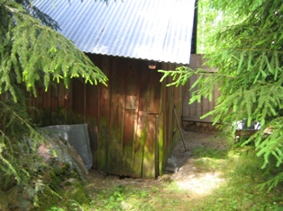
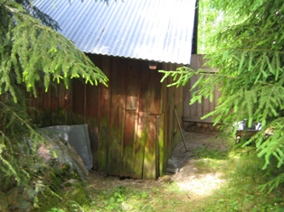
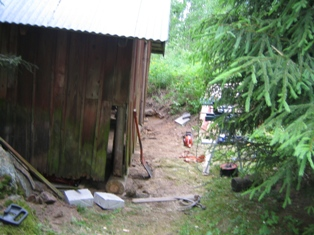
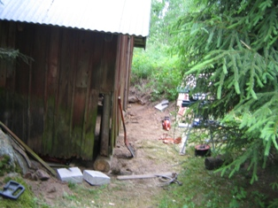

GitHub-projektit
Näillä projekteilla on lähinnä tarkoitus osoittaa, että web-ohjelmointiakin on harrastettu ja harjoiteltu. Ei välttämättä loppuun vietyjä, vaan tekniikoiden testaamista. Näitä tulee lisää ajan myötä.
Näillä projekteilla on lähinnä tarkoitus osoittaa, että web-ohjelmointiakin on harrastettu ja harjoiteltu. Ei välttämättä loppuun vietyjä, vaan tekniikoiden testaamista. Näitä tulee lisää ajan myötä.
Siis juuri nämä sivut, jotka toivon mukaan muuttuvat ja päivittyvät koko ajan paremmiksi. Harjoitteluareena perus web-tekniikoille: html, css, JavaScript-kirjastot (JQuery ym.), html-form, dynaaminen lataus yms.
Kontaktilista-sovellus, jossa voi katsella omaa kontaktilistaansa ja hakea nimen perusteella. Lisäys, muokkaus ja poistaminen seuraava vaihe. Harjoitus koskien JSON, REST, Angular.js, Bootstrap ja Node.js tekniikoita. Melko hyvin responsiivinen.
Quizzie on tietovisa, jossa voi valita kysymysten aihealueen ja sovellus kertoo pistemäärän. Pahasti keskeneräinen ja tämä on lähinnä harjoitus koskien JSON, simple REST, Angular.js (routes, controllers) ja Node.js tekniikoita.
Vähän puhdetöitäkin kesällä 2015 eli mökin pihapiirin navetta tarvitsi ulkoremontin. Toinen takapääty nostettu ja samalla alahirsiä ja runkotolppia vaihdettu sekä korjattu ulkolaudoitus. Etupäädyn ulkolaudoitus ja yläikkunat uusittu kokonaan.
 

 
